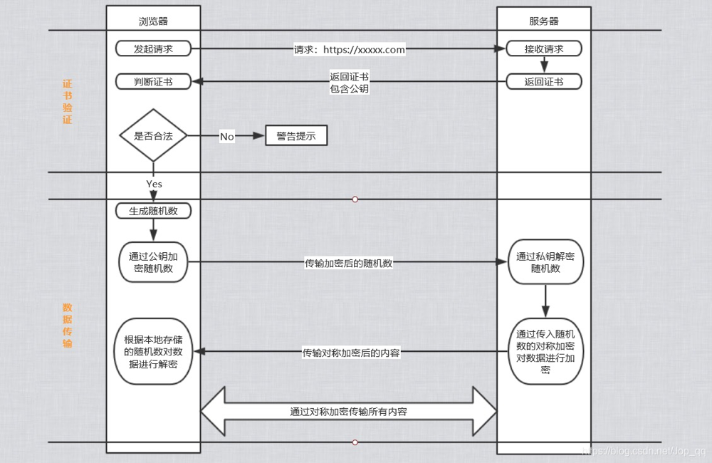
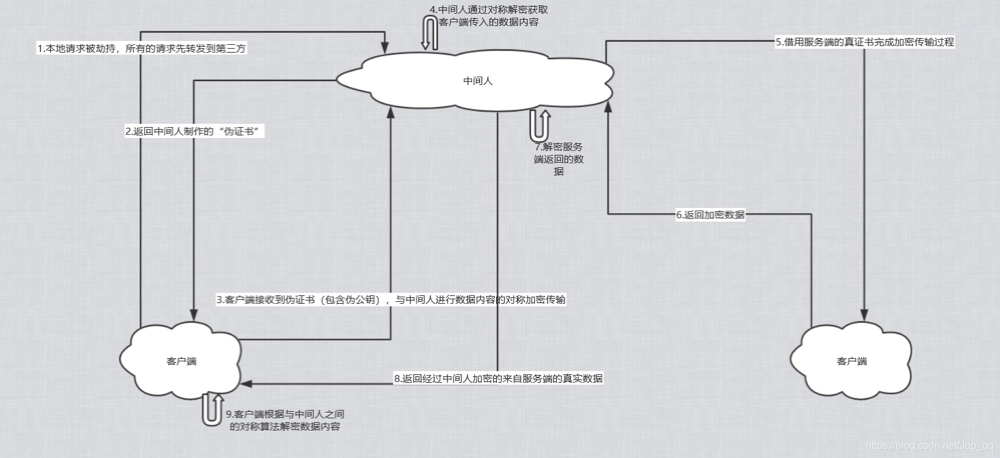

引导问题
为什么使用Https是安全的？
Https的底层原理如何实现？
使用Https是绝对安全的吗？
Https实现原理
Https协议在内容传输上使用的加密是“对称加密”，而“非对称加密”只作用于证书验证阶段。Https的整体实现过程分为“证书验证”和“数据传输”两个阶段，过程如下所示：
- Https协议在内容传输上使用的加密是“对称加密”，而“非对称加密”只作用于证书验证阶段。
- Https的整体实现过程分为“证书验证”和“数据传输”两个阶段，过程如下所示：

证书验证阶段
浏览器发起Https请求；
服务器端返回Https证书；
浏览器客户端验证证书是否合法，若不合法则提示警告
数据传输阶段
当证书验证合法后，在客户端本地生成随机数；
通过公钥加密随机数，并将加密后的随机数传输到服务端；
服务端通过私钥对接收到的加密随机数进行解密操作；
服务端通过客户端传入的随机数构造对称加密算法，对返回结果内容进行加密操作后再进行内容传输。
为什么数据传输是用对称加密？
首先，非对称加密的加密效率是非常低的，而http的应用场景通常存在着端与端之间的大量数据交互，从效率来说是无法接受的；
其次，在Https场景中只有服务端保存了私钥，而一对公私钥只能实现单向的加解密（即服务端无法使用私钥对传回浏览器客户端的数据进行加密，只能用于解密），所以Https中内容传输加密采取的是对称加密，而不是非对称加密（此处随机数则是对称加密的介体，即客户端和服务器端所拥有的随机数都是一致的，能够进行双向加解密）。
为什么需要CA认证机构颁发证书？
Http协议被认为不安全是因为传输过程容易被监听者勾线监听、伪造服务器，而Https协议主要就是解决网络传输的安全性问题。
首先，我们假设不存在认证机构，任何人都可以制作证书，这存在的风险便是经典的“中间人攻击”问题。具体过程如下：

“中间人攻击”原理
客户端请求被劫持（如DNS劫持等），所有的客户端请求均被转发至中间人的服务器；
中间人服务器返回中间人伪造的“伪证书”（包含伪公钥）；
客户端创建随机数，通过中间人证书的伪公钥对随机数进行加密后传输给中间人，然后凭随机数构造对称加密算法对要进行传输的数据内容进行对称加密后传输；
中间人因为拥有客户端生成的随机数，从而能够通过对称加密算法进行数据内容解密；
中间人再以“伪客户端”的身份向正规的服务端发起请求；
因为中间人与服务器之间的通信过程是合法的，正规服务端通过建立的安全通道返回加密后的数据内容；
中间人凭借与正规服务器建立的对称加密算法进行数据内容解密；
中间人再通过与客户端建立的对称加密算法对正规服务器返回的数据内容进行加密传输；
客户端通过中间人建立的对称加密算法对返回的数据内容进行解密；
由于缺少对证书的真伪性验证，所有客户端即使发起了Https请求，但客户端完全不知道自己发送的请求已经被第三方拦截，导致其中传输的数据内容被中间人窃取。
浏览器如何确保CA证书的合法性？
- 证书包含的主要信息：
- 颁发机构信息
- 公钥
- 公司信息
- 域名
- 有效期
- 指纹
- 等等
- 证书的合法性依据
首先，权威机构是需要通过认证的。其次证书的可信性基于信任制，CA认证机构需要对其颁发的证书进行信用担保，只要是CA认证机构颁发的证书，我们就认为是合法的。CA认证机构会对证书申请人的信息进行审核的。
浏览器如何验证证书的合法性？
浏览器发起https请求时，服务器会返回网站的SSL证书，浏览器需要对证书做以下验证：
- 验证域名、有效期等信息是否正确；
- 判断证书来源是否合法。每份签发证书都可以根据验证链查找到对应的根证书，操作系统、浏览器会在本地存储权威机构的根证书，利用本地根证书可以对对应机构签发的证书进行来源验证；
- 判断证书是否被篡改。需要与CA服务器进行对比校验；
- 判断证书是否已被吊销。通过CRL(Certificate Revocation List 证书注销列表) 和 OCSP（Online Certificate Status Protocol 在线证书状态协议）实现，其中OCSP可用于第3步中以减少与CA服务器的交互，提高验证效率。
以上任意一步都同时满足的情况下，浏览器才认为证书是合法的。
只有认证机构可以生产证书吗？
如果需要浏览器不提示安全风险，那只能通过认证机构签发的证书。但浏览器通常只是会提示安全风险，并不会限制网站的访问，所有从技术上来说，谁都可以生产证书，只要有证书就能够完成网站的https传输。
客户端的本地随机数被窃取了怎么办？
其实https并不包含对随机数的安全保证，https保证的只是数据传输过程安全，而随机数存储于本地，本地的安全属于另一安全范畴，应对的措施有安装杀毒软件、反木马、浏览器升级修复漏洞等。（这也反映了Https协议并不是绝对的安全的）
使用Https被抓包了会怎样？
由于Https的数据是加密，常规下抓包工具代理请求后抓到的包内容是加密状态的，无法直接查看。
但是，浏览器只会提示安全风险，如果用户授权仍然继续访问网站，完成请求。那么，只有客户端是我们自己的终端，我们授权的情况下，便能够建立中间人网络，而抓包工具作为中间人的代理。
通常， HTTPS 抓包工具的使用方法是会生成一个证书，用户需要手动把证书安装到客户端中，然后终端发起的所有请求通过该证书完成与抓包工具的交互，然后抓包工具再转发请求到服务器，最后把服务器返回的结果在控制台输出后再返回给终端，从而完成整个请求的闭环。
即是，HTTPS 只防止用户在不知情的情况下通信被监听，如果用户主动授信，是可以构建“中间人”网络，代理软件可以对传输内容进行解密。

...
...
This is copyright.